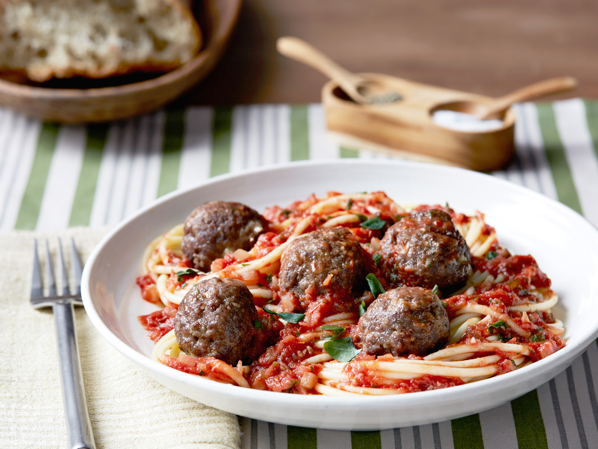

Spaghetti and Meatballs

Description
Spaghetti and meatballs is one of the most popular comfort foods! This dish consists of al dente pasta noodles, rich tomato sauce, and the most flavorful meatballs!
Ingredients
- 1 pound spaghetti
- 1 1/4 pounds ground beef
- 4 cups tomato sauce
- 1 egg, beaten
- 1/2 cup Italian breadcrumbs
- 1/4 cup Parmesan, grated
- 4 garlic cloves, chopped
- 3 tablespoons olive oil
- salt
- pepper
Directions
- Preheat the oven to 450°F.
- Combine ground beef, egg, Italian breadcrumbs, and garlic cloves in a bowl. Add salt and pepper to taste.
- Form 1-inch meatballs by hand and place them on a baking sheet.
- Bake the meatballs in the oven for 10 minutes.
- Heat a large pot of water to boil the spaghetti. Once boiling, add salt and cook the pasta until al dente.
- Heat a large saucepan to moderate heat and add garlic cloves, olive oil, and tomato sauce. Cook for 10 minutes.
- Drain and toss the pasta in the tomato sauce.
- Finish the dish with meatballs and Parmesan. Serve and enjoy!